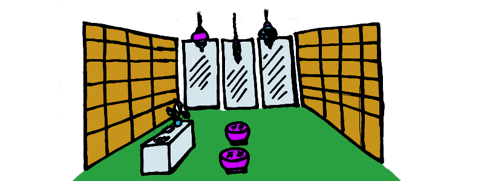

БРАНДИНГ
Индивидуалност и асоциации
Повечето дейности, с които ще се занимавате не са уникални. Ако ще се занимавате с бизнес, трябва да се различавате от конкуренцията. Освен ако не сте високотехнологична нация със запаси от ценен метал като вибраний, ви остава да се откроите само чрез бранда (или личността) ви.
Както казва философът Витгенщайн “Границите на моя език обозначават границите на моя свят.” Затова при изграждането на бранда ви, започнете с ключови думи, които искате хората да асоцират с марката ви. Ако си свършите работата добре, щом питате десетина клиенти как биха ви описали ще получите повтарящи се отговори като при Apple (креативна), Toyota (сигурна) или Disney (магична).
Ако брандът ми беше...
Докато размишлявате, включете сетивата си. Какъв е звъкът, ароматът, или вкусът на бранда ви? Като диско парти? Като шума на вълните, които се разбиват на брега? Пикантно като екзотично мобилно ресторантче? Като Channel 5? Като захарен памук? Като сушито на майстор Джиро?
Ако марката ви беше човек какъв щеше да е по характер, как щеше да се облича и да се държи? А ако беше филм или книга какви щяха да са заглавието, жанра и историята?
Представете си, че влизате в магазин с произведенията ви. Как искате да се почустват посетителите? Какво искате да излъчват помещенията, особено тези, които се виждат от клиенти? Топло? Забавно? Луксозно? Компетентно? Минималистично? Творческо?
Представете си какъв човек стои зад бранда. Ако сте единствени, каква е вашата индивидуалност? Бохемска или престижна, общителна, страстна или експертна? Ако не предадете същността си и какво е да се работи с вас, клиентите може да се почувстват излъгани. Понякога се старем прекалено да сме професионалисти, но ако имаме нужда от по- непосредствена връзка, за да си свършим работата, това може да ни изиграе лоша шега. Или ако имате по- цветист език.
Привличане чрез бранда на правилните клиенти
Помислете и кои брандове обичате самите вие и защо. Къде се връщате да купувате отново и отново? Вероятно бихте желали да включите елементите, които ви допадат в собствената си услуга било то топлота, ненатрапчива услужливост или напротив- експедитивност и енергичност без излишни емоции.
Все пак балансирайте това, което ви харесва с това, което се харесва на потенциалните ви клиенти. Целта на бранда ви е да привлича, а не толкова да изразява. Ако на вас ви харесва примерно даден цвят или естетика, но идеалните ви клиенти биха предпочели или биха били привлечени от нещо съвсем друго, трябва сериозно да се замислите.
Сетете се за два- три мечтани клиенти по имена и направете профил на идеалния ви клиент. Ако сте от известно време в бизнеса, помислете със същите клиенти ли искате да останете или би ви било приятно да намерите по- различни, примерно такива, които ви се доверяват повече или пък които имат по- големи бюджети, след като сте натрупали опит и увереност.
Какво казват хората за вас или какво би ви се искало да казват? Ами познатите им- какво говори за човека, ако ползва вашия бранд? Че е модерен, че е стилен, че е практичен? В нашето общество имиджът и статусът имат немалко значение.
Клиенти с по- висок бюджет изискват по-високо ниво не само на услугите, но и на брангинда. Може да имате отлична услуга, но ако това, което представяте не е на ниво, си правите лоша услуга.
Но освен това, по-нелогично, ако се целите в клиенти, които търсят достъпни цени, елегантен и фино изработен брандинг може да ги изплаши, че не могат да си ви позволят. Обикновена листовка без особен дизайн или семпъл сайт върши повече работа в случая.
Обратното също важи- помислете не само какви клиенти имате, но и какви бихте желали да имате. Случва се, ако сте започнали примерно да фрийлансвате по- необмислено, да сте попаднали на клиенти, които са в ниша, която ви е безинтересна или да не могат да ви плащат достатъчно.
В основата на бранда е проблем
Какво казват хората за проблема, който имат? Разгледайте коментарите във форуми, Facebook групи и други сайтове и съберете мнения за продукти или услуги, които решават същия проблем.
Копирайте си в някакъв документ точните думи, с които говорят евентуалните ви клиенти, какво им липсва или не е съвсем в ред в наличното на пазара. Така когато дойде време да пишете посланието си и рекламите ще имате идея какво се търси и с подходящите думи, публиката ви ще има чувството, че сте влезли в главата им, че знаете желанията и потребностите им.
Не е нужно само да е красиво, трябва да е и запомнящо се.
Как брандът ви да е запомнящ се
Авторите Чип и Дан Хийт предлагат пет принципа за неща, които да се запомнят:
- просто: кое е същественото, споделете го в най- изчистения му вид;
- неочаквано: накарйте ги да мисля, да се учудят и заинтригуват (рекламата с розовите плюшени перденца);
- конкретно: не абстрактно, включете сетивата, да могат клиентите ви да си представят как използват продукта или услугата ви (какво точно кафе предлагате, в каква обстановка се пие и с кого);
- достоверно: включете детайли и статистика;
- емоционално: успокойте или разчувстайте клиентите си, но без да използвате евтини номера;
- истории: за превъзмогване на пречка (както при Johnny Walker), за установете на връзка (рекламата на македонска наденица Леки и всяка втора за бира), за творчески пробив (изстрелването на Tesla в космоса).
Накратко, какъвто и да е брандингът, вложете енергия и емоция, но също, ако искате да го направите запомнящ се, помислете как разбива представи.